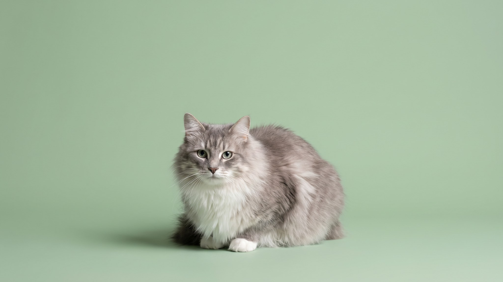

Увидели комок шерсти в углу и решили искупать кошку. Знакомо. Но ванна для большинства домашних кошек это стресс: мокрая шерсть, потеря запаха, испуг. Шерсть пачкается не сразу и не вся, и 90% проблем закрываются точечным уходом раз в неделю. Ниже: что делать вместо купания и как приучить кошку к процедурам без борьбы.
🐾 Заведите дневник ухода за кошкой
Вес, шерсть, обработки, прививки — всё в одном месте. А если что-то смущает, AI-ветеринар ответит круглосуточно и бесплатно.
Завести дневник → Завести в MAX →
У вас iPhone? AnimaLife есть в App Store
Пушистая кошка вылизывает себя несколько раз в день, но длинная шерсть сваливается в колтуны быстрее, чем она успевает её разобрать. Вычёсывание раз в 2–3 дня убирает мёртвый подшёрсток, жир, пыль и мусор лучше любого шампуня.
Порядок работы. Сначала расчёска с широкими зубьями проходит по всей длине шерсти и цепляет крупные колтуны. Потом пуходёрка или щётка с мягкими зубьями собирает подшёрсток. Завершает фурминатор или резиновая варежка: снимает остатки и делает шерсть гладкой.
В позднюю осень и начало зимы многие кошки линяют активнее, поэтому в ноябре расчёсывать стоит чаще. Начинайте с наименее чувствительных мест: спина, бока. Живот, паховая зона и лапы оставляйте на конец сессии.
Это четыре зоны, которые загрязняются быстрее всего. Раз в неделю прорабатывайте каждую по порядку.
Лапы и пространство между подушечками. После зимних прогулок на лапах остаётся соль и реагент. Протрите влажной салфеткой без отдушек или специальной влажной салфеткой для животных. У длинношёрстных кошек шерсть между пальцами собирает грязь и скатывается. Раз в 3–4 недели аккуратно подстригайте её маленькими ножницами с закруглёнными концами.
Штанишки. Шерсть вокруг ануса у пушистых кошек загрязняется после туалета. Раз в неделю осматривайте эту зону. Если шерсть испачкана, протрите влажной тканью. Если шерсть там постоянно спутывается, раз в 1–2 месяца подстригайте её до длины около 1 сантиметра.
Уголки глаз. Коричневые или рыжеватые дорожки под внутренними уголками убираются ватным диском, смоченным тёплой кипячёной водой. Движение от внутреннего уголка к внешнему. Для каждого глаза новый диск. Делайте это раз в 3–4 дня, если выделения есть.
Подбородок. Кошки с тёмным или плотным подшёрстком накапливают под подбородком сальные выделения. Смочите мягкую ткань тёплой водой, аккуратно протрите. Частота: по состоянию, обычно раз в 1–2 недели.
Есть готовые сухие шампуни и пенки для кошек, которые наносят на шерсть, втирают и расчёсывают. Они убирают запах и лёгкое загрязнение без воды. Подходят для перевозки, после болезни, когда кошка ослаблена, или между редкими купаниями выставочных животных.
Пользоваться чаще раза в две недели не стоит: пересушивает кожу. Выбирайте средство с пометкой «для кошек», без спирта и хлора.
Кошки хорошо переносят уход, если им не делают всё сразу и не удерживают силой. Несколько правил, которые работают.
Начинайте с короткого касания: 30 секунд расчёски, сразу угощение. Постепенно удлиняйте сессии. Не доводите до сопротивления: лучше закончить раньше, чем уложить кошку насильно. Выбирайте время после еды или игры, когда кошка расслаблена. Один и тот же порядок действий из раза в раз снижает тревогу.
Есть ситуации, когда влажным салфеткам не справиться: кошка вымазалась в масле, краске или другом веществе, которое нельзя оставлять на коже, либо ветеринар назначил лечебный шампунь. В этих случаях купание оправдано. Схему и частоту лечебного мытья обсудите со своим ветеринаром.
🐾 Чтобы уход не держать в голове
AnimaLife напомнит, когда стричь когти, вычёсывать, купать и обрабатывать от паразитов, и заведёт дневник по вашему питомцу. Бесплатно.
Настроить напоминания → Настроить в MAX →
У вас iPhone? AnimaLife есть в App Store
🐾 Понравился разбор?
Подпишитесь на канал — каждый день разбираем по одному тревожному симптому у кошек и собак: что в пределах нормы, а когда пора к врачу. Подпишитесь, чтобы не пропустить разбор, который может спасти здоровье вашего питомца.
Материал носит информационный характер и не заменяет очную консультацию ветеринара.